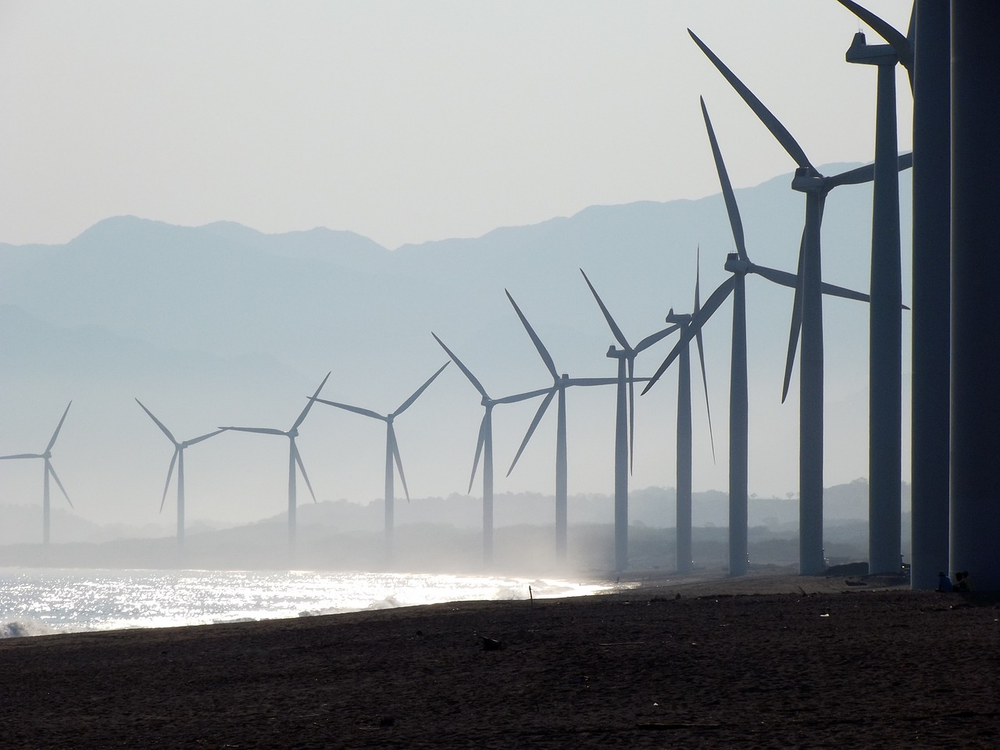

Zöldenergia célja
A szén-dioxid-kibocsátás csökkentése Az emberi tevékenység környezetre gyakorolt negatív hatásainak mérséklése A természeti erőforrások megőrzése
Mi a zöldenergia

A zöldenergia hozhatja el az igazán tiszta környezetet és a klímasemleges gazdaságot. Ha a mindennapi élethez szükséges energiát megújuló, tiszta erőforrásokból fedezzük, akkor nem lesz szükség szénhidrogének elégetésére.